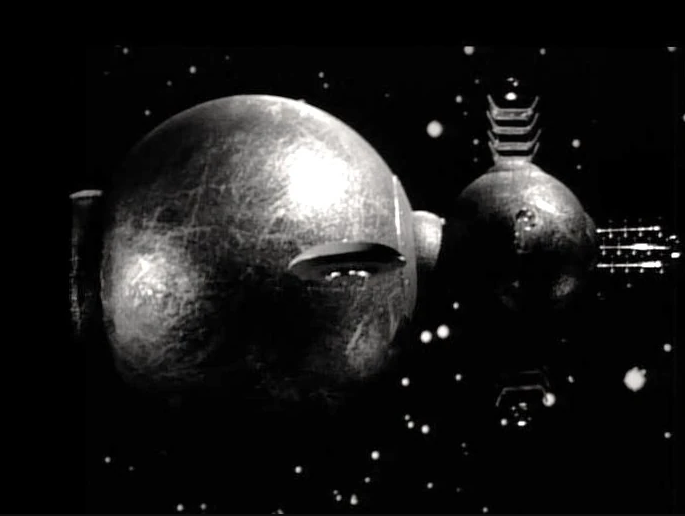

|  |
|
You're standing in a corridor aboard a derelict space vessel. Wires hang from the ceiling, moisture drips from the vents over your head and creaking sounds echo past your ears. To your left you see a door slightly ajar and in front of you there is an empty and finger-smudged encasing that appears to have been some kind of stasis chamber ... |